Настоящият текст е част от книгата на Светлин Наков и колектив:
Въведение в програмирането с Java
Можете да изтеглите цялата книга безплатно от www.introprogramming.info.
Настоящият текст е част от книгата на Светлин Наков и колектив:
Можете да изтеглите цялата книга безплатно от www.introprogramming.info.
Лъчезар Цеков
В настоящата тема ще разгледаме основните термини от програмирането и ще напишем първата си програма. Ще се запознаем с това какво е програмиране и каква е връзката му с компютрите и програмните езици.
Накратко ще разгледаме основните етапи при писането на софтуер.
Ще въведем езика Java и ще се запознаем с Java платформата и Java технологиите.
Ще разгледаме какви помощни средства са ни необходими, за да можем да програмираме на Java.
Ще използваме Java, за да напишем първата си програма, ще я компилираме и изпълним както от командния ред, така и от среда за разработка Eclipse.
Ще се запознаем с документацията на Java API, която позволява по-нататъшно изследване на възможностите на езика.
В днешно време компютрите навлизат все по-широко в ежедневието ни и все повече имаме нужда от тях, за да се справяме със сложните задачи на работното място, да се ориентираме, докато пътуваме, да се забавляваме или да общуваме. Неизброимо е приложението им в бизнеса, в развлекателната индустрия, в далекосъобщенията и в областта на финансите. Няма да преувеличим, ако кажем, че компютрите изграждат нервната система на съвременното общество и е трудно да си представим съществуването му без тях.
Въпреки масовото им използване, малко хора имат представа как всъщност работят компютрите. Всъщност не компютрите, а програмите, които вървят на тях (софтуерът), имат значение. Програмите са тези, които са полезни за потребителите, и чрез тях се реализират различните типове услуги, променящи живота ни.
За да разберем какво значи да програмираме, нека грубо да сравним компютъра и операционната система, вървяща на него, с едно голямо предприятие заедно с неговите цехове, складове и транспортни механизми. Това сравнение е грубо, но дава възможност да си представим степента на сложност на един съвременен компютър. В компютъра работят много процеси, които съответстват на цеховете и поточните линии. Твърдият диск заедно с файловете на него и оперативната (RAM) памет съответстват на складовете, а различните протоколи са транспортните системи, внасящи и изнасящи информация.
Различните видове продукция в едно предприятие се произвеждат в различните цехове. Цеховете използват суровини, които взимат от складовете, и складират готовата продукция обратно в тях. Суровините се транспортират в складовете от доставчиците, а готовата продукция се транспортира от складовете към пласмента. За целта се използват различни видове транспорт. Материалите постъпват в предприятието, минават през различни стадии на обработка и напускат предприятието, преобразувани под формата на продукти. Всяко предприятие преобразува суровините в готов за употреба продукт.
Компютърът е машина за обработка на информация и при него както суровината, така и продукцията е информация. Входната информация най-често се взима от някой от складовете (файлове или RAM памет), където е била транспортирана, преминава през обработка от един или повече процеси и излиза модифицирана като нов продукт. Типичен пример за това са уеб базираните приложенията. При тях за транспорт както на суровините, така и на продукцията се използва протоколът HTTP.
Целият процес на изработка на продуктите има много степени на управление. Отделните машини и поточни линии се управляват от оператори, цеховете се управляват от управители, а предприятието като цяло се управлява от директори. Всеки от тях упражнява контрол на различно ниво. Най-ниското ниво е това на машинните оператори – те управляват машините, образно казано, с помощта на копчета и ръчки. Следващото ниво е на управителите на цехове. На най-високо ниво са директорите, те управляват различните аспекти на предприятието. Всеки от тях управлява, като издава заповеди.
По аналогия при компютрите и софтуера има много нива на управление. На най-ниско машинно ниво се управлява самият процесор и регистрите на компютъра – можем да сравним това с управлението на машините в цеховете. На по-високо системно ниво се управляват различните аспекти на операционната система като файлова система, периферни устройства, протоколи – можем да сравним това с управлението на цеховете и отделите в предприятието. На най-високо ниво в софтуера са приложенията. При тях се управлява цял ансамбъл от процеси, за изпълнението на които са необходими огромен брой операции на процесора. Това е нивото на директорите, които управляват цялото предприятие с цел максимално ефективно използване на ресурсите за получаване на качествени продукти.
Същността на програмирането е да се управлява работата на компютъра на всичките му нива. Управлението става с помощта на заповеди (команди) от програмиста към компютъра. Да програмираме, означава да управляваме компютъра с помощта на заповеди. Заповедите се издават в писмен вид и биват безпрекословно изпълнявани от компютъра. Те могат да бъдат подписани и подпечатани с цел да се удостовери авторитета на този, който ги издава.
Програмистите са хората, които издават заповедите. Заповедите са много на брой и за издаването им се използват различни видове програмни езици. Всеки език е ориентиран към някое ниво на управление на компютъра. Има езици, ориентирани към машинното ниво – например асемблер, други са ориентирани към системното ниво, например C. Съществуват и езици от високо ниво, ориентирани към писането на приложни програми. Такива са Java, C++, C#, Visual Basic, Python, Ruby, PHP и други.
В тази книга ще разгледаме програмния език Java. Това е език за програмиране от високо ниво. При използването му позицията на програмиста в компютърното предприятие се явява тази на директора.
Писането на софтуер може да бъде сложна задача, която отнема много време на цял екип от софтуерни инженери и други специалисти. Затова с времето са се обособили методики и практики, които улесняват живота на програмистите. Разработката на всеки софтуерен продукт преминава през няколко етапа, а именно:
- Събиране на изискванията за продукта и изготвяне на задание;
- Планиране и изготвяне на архитектура и дизайн;
- Реализация;
- Изпитания на продукта (тестове);
- Внедряване и експлоатация;
- Поддръжка.
Фазите реализация, изпитания, внедряване и поддръжка се осъществяват с помощта на програмиране.
В началото съществува само идеята за определен продукт. Това е набор от изисквания, дефиниращи действия от страна на компютъра, които в общия случай улесняват досега съществуващи дейности. Като пример може да дадем изчисляването на заплатите, пресмятане на балистични криви, търсене на най-пряк път в Google Maps. Много често софтуерът реализира несъществуваща досега функционалност като автоматизиране на някаква дейност и др.
Изискванията за продукта най-често се дефинират под формата на документи, написани на естествен език – български, английски или друг. На този етап не се програмира, дори не са необходими програмисти. Изискванията се дефинират от експерти, запознати с проблематиката на конкретната област, които умеят да ги описват в разбираем за програмистите вид. В общия случай такива експертите не разбират от програмиране. Те се наричан бизнес анализатори.
След като изискванията бъдат събрани, идва ред на етапа по анализ на изискванията и планиране. Този етап включва съставяне на технически план за изпълнението на проекта, който описва платформите, технологиите и първоначалната архитектура (дизайн) на програмата. Тази стъпка включва значителна творческа работа и обикновено се реализира от софтуерни инженери с голям опит, наричани понякога софтуерни архитекти. Съобразно изискванията се избират:
- Вида на приложението – например конзолно приложение, настолно приложение (GUI application), клиент-сървър приложение, уеб приложение, Rich Internet Application (RIA) или peer-to-peer приложение;
- Архитектурата на програмата – например еднослойна, двуслойна, трислойна, многослойна или SOA архитектура;
- Програмният език, най-подходящ за реализирането – например Java или C++ или C# или комбинация от езици;
- Технологиите, които ще се ползват: платформа (примерно Java EE, Microsoft .NET или друга), сървъри за бази данни (примерно Oracle, SQL Server, MySQL или друга), технологии за потребителски интерфейс (примерно Flash, JavaServer Faces, Eclipse RCP, ASP.NET, Windows Forms или друга), технологии за достъп до данни (примерно Hibernate, JPA или LINQ to SQL), технологии за изготвяне на отчети (примерно Jasper Reports) и много други технологии, които ще бъдат използвани за реализирането на различни части от приложението.
- Броят и уменията на хората, които ще съставят екипа за разработка (големите и сериозни проекти се пишат от големи и сериозни екипи от разработчици);
- План на разработката – етапи, на които се разделя функционалността, и срокове за всеки етап.
- Други (големина на екипа, местоположение на екипа и т.н.).
Въпреки че съществуват много правила, спомагащи за правилния анализ и планиране, на този етап се изискват значителна интуиция и усет. Тази стъпка предопределя цялостното по-нататъшно развитие на процеса на разработка. На този етап не се извършва програмиране, а само подготовка за него.
Етапът, най-тясно свързан с програмирането, е етапът на реализацията (имплементацията). Съобразно със заданието, дизайна и архитектурата на програмата (приложението) се пристъпва към реализирането (написването) й в програмен вид. Този етап се изпълнява от програмисти, които пишат програмния код.
Важен етап от разработката на софтуер е етапът на изпитания на продукта. Той цели да удостовери, че реализацията следва и покрива изискванията на заданието. Този процес може да се реализира ръчно, но предпочитаният вариант е написването на автоматизирани тестове, които да реализират проверките. Тестовете са малки програми, които автоматизират, до колкото е възможно, изпитанията. Съществуват парчета функционалност, за които е много трудно да се напишат тестове и поради това процесът на изпитание на продукта включва както автоматизирани, така и ръчни процедури.
Процесът на тестване (изпитание) се реализира от екип инженери по осигуряването на качеството – quality assurance (QA) инженери. Те работят в тяхно взаимодействие с програмистите за откриване и коригиране на дефектите (бъговете). В този етап почти не се пише нов програмен код, а само се оправят дефекти в съществуващия код.
В процеса на изпитанията най-често се откриват множество пропуски и грешки и програмата се връща обратно в етап на реализация. До голяма степен етапите на реализация и изпитания вървят ръка за ръка и е възможно да има множество преминавания между двете фази, преди продуктът да е покрил изискванията на заданието и да е готов за етапа на внедряване и експлоатация.
Внедряването или инсталирането е процесът на въвеждане на даден софтуерен продукт в експлоатация. Ако продуктът е сложен и обслужва много хора, този процес може да се окаже най-бавният и най-скъпият. За по-малки програми това е относително бърз и безболезнен процес. Най-често се разработва специална програма – инсталатор, която спомага за по-бързата и лесна инсталация на продукта. Понякога, ако продуктът се внедрява в големи корпорации с десетки хиляди копия, се разработва допълнителен поддържащ софтуер специално заради внедряването. Като пример можем да дадем внедряването на Microsoft Windows в българската държавна администрация. След като внедряването приключи, продуктът е готов за експлоатация.
Внедряването се извършва обикновено от екипа, който е разработил продукта или от специално обучени специалисти по внедряването. В този етап почти не се пише нов код, но съществуващият код може да се доработва и конфигурира докато покрие специфичните изисквания за успешно внедряване.
В процеса на експлоатация неминуемо се появяват проблеми – заради грешки в самия софтуер или заради неправилното му използване и конфигурация или заради промени в нуждите на потребителите. Тези проблеми довеждат до невъзможност за употреба на продукта и налагат допълнителна намеса от страна на разработчиците и експертите по поддръжката. Процесът по поддръжка обикновено продължава през целия период на експлоатация независимо колко добър е софтуерният продукт.
Поддръжката се извършва от екипа по разработката на софтуера. В зависимост от промените, които се правят, в този процес могат да участват бизнес анализатори, архитекти, програмисти, QA инженери, администратори и други.
Етапът на документацията всъщност не е отделен етап, а съпътства всички останали етапи. Документацията е много важна част от разработката на софтуер и цели предаване на знания между различните участници в разработката и поддръжката на продукта. Информацията се предава както между отделните етапи, така и в рамките на един етап.
Както сами се убедихте, разработването на софтуер не е само програмиране и включва много други процеси като анализ на изискванията, проектиране, планиране, тестване и поддръжка, в които участват не само програмисти, но и много други специалисти. Програмирането е само една малка, макар и много съществена, част от разработката на софтуера.
В настоящата книга ще се фокусираме само и единствено върху програмирането, което е единственото действие от изброените по-горе, без което не можем да разработваме софтуер.
Преди да преминем към подробно описание на езика Java и на Java платформата, нека да се запознаем с прост пример на това какво представлява една програма, написана на Java.
|
class HelloJava { public static void main(String[] arguments) { System.out.println("Hello, Java"); } } |
Единственото нещо, което прави тази програма, е да изпише съобщението "Hello, Java" в стандартния изход. Засега е още рано да я изпълняваме, а само искаме да разгледаме структурата. Малко по-нататък ще дадем пълно описание на това как да се компилира и изпълни както от командния ред, така и от среда за разработка.
Нашата първа програма е съставена от три логически части:
- Дефиниция на клас;
- Дефиниция на метод main();
- Съдържание на метода main().
На първия ред от нашата програма дефинираме клас с името HelloJava. Най-простата дефиниция на клас се състои от ключовата дума class, следвана от името на класа. В нашия случай името на класа е HelloJava.
На втория ред дефинираме функция (метод) с името main(), която представлява входна или стартова точка за програмата. Всяка програма на Java стартира от метод main() със сигнатура:
|
public static void main(String[] arguments) |
Методът трябва да е деклариран по точно показания начин, трябва да е public, static и void, трябва да има име main и като списък от параметри трябва да има един единствен параметър от тип масив от String. Местата на модификаторите public и static могат да се разменят. В нашия пример параметърът се казва arguments, но това не е задължително, параметърът може да има произволно име. Повечето програмисти избират за име args или argv.
Ако някое от гореспоменатите изисквания не е спазено, програмата ще се компилира, но няма да може да се стартира, а ще ни даде съобщение за грешка, защото не съдържа стартова точка.
Съдържанието на всеки метод се намира след сигнатурата на метода, заградено от отваряща и затваряща главни скоби. На третия ред от програмата ни използваме системния обект System.out и неговия метод println(), за да изпишем произволно съобщение в стандартния изход в случая "Hello, Java". Целият трети ред представлява един Java израз.
В main() метода можем да сложим произволна последователност от изрази и те ще бъдат изпълнени в реда, в който сме ги задали.
Подробна информация за изразите е дадена в главата "Оператори и изрази", работата с конзолата е описана в главата "Вход и изход от конзолата", а класовете и методите са описани в главата "Дефиниране на класове".
В горния пример използвахме някои ключови думи, като class, public, static и void и имената на някои от системните обекти, като System.out.
|
|
Внимавайте, докато пишете! Изписването на един и същ текст с главни, малки букви или смесено в Java означава различни неща. Да напишем Class е различно от class и да напишем System.out е различно от SYSTEM.OUT. |
Това правило важи за всички конструкции в кода – ключови думи, имена на променливи, имена на класове, стрингове и т.н.
Форматирането представлява добавяне на символи, несъществени за компилатора, като интервали, табулации и нови редове, които структурират логически програмата и улесняват четенето. Нека отново разгледаме кода на нашата първа програма.
|
class HelloJava { public static void main(String[] arguments) { System.out.println("Hello, Java"); } } |
Програмата съдържа пет реда и някои от редовете са повече или по-малко отместени навътре с помощта на табулации. Всичко това можеше да се напише и без отместване:
|
class HelloJava { public static void main(String[] arguments) { System.out.println("Hello, Java"); } } |
или на един ред:
|
class HelloJava{public static void main(String[]arguments){ System.out.println("Hello, Java");}} |
или дори така:
|
class HelloJava {public static void main( String[ ] arguments) { System. out.println("Hello, Java");} } |
Горните примери ще се компилират и изпълнят по абсолютно същия начин като форматирания, но са далеч по-нечетливи и неудобни за промяна.
|
|
Не допускайте програмите ви да съдържат неформатиран код! Това силно намалява четимостта и довежда до трудно модифициране на кода. |
- Методите се отместват по-навътре от дефиницията на класа;
- Съдържанието на методите се отмества по-навътре от дефиницията на метода;
- Отварящата фигурна скоба { трябва да е на същия ред, на който е дефиниран класът или методът;
- Затварящата фигурна скоба } трябва да е сама на ред, отместена на същото разстояние като началото на реда на отварящата;
- Имената на класовете трябва да започват с главна буква;
- Имената на променливите и имената на методите трябва да започват с малка буква.
Всяка Java програма се дефинира в един или повече класа. Всеки публичен клас трябва да се дефинира в отделен файл с име, съвпадащо с името на класа и разширение .java. При неизпълнение на тези изисквания и опит за компилация получаваме съобщение за грешка.
Ако искаме да компилираме нашата първа програма, горния пример трябва да запишем във файл с името HelloJava.java.
Първата версия на Java е разработена от Sun Microsystems и е пусната в употреба през 1995 година, като част от Java платформата. В последствие се появяват множество други реализации включително от GNU, Microsoft, IBM, Oracle и други технологични доставчици.
Основно предимство и причина, поради които езикът и платформата Java са се наложили, е възможността кодът веднъж компилиран да работи на произволни, поддържани от платформата, операционна система или хардуерно устройство. Можем да компилираме програмата на Windows и да я изпълняваме както на Windows така и на Linux, Apple OSX и всяка друга операционна система, поддържана от Java платформата. Можем дори да изпълняваме програмите на мобилните си телефони, поддържащи Java.
Идеята за независимост от средата е заложена при самото създаване на Java платформата и се реализира с малка хитрина. Изходният код не се компилира до инструкции, предназначени за даден микропроцесор, и не използва специфични възможности на дадена операционна система, а се компилира до междинен език - така нареченият bytecode. Този bytecode не се пуска за директно изпълнение от микропроцесора, а се изпълнява от негов аналог – виртуален процесор, наречен Java Virtual Machine (JVM).
В самия център на Java платформата бие нейното сърце – Java Virtual Machine, която е основният компонент, осигуряващ независимостта от хардуер и операционна система.
JVM е абстрактна изчислителна машина. По аналогия на реалните електронноизчислителни машини има набор от инструкции и манипулира области от паметта по време на изпълнение на програмите.
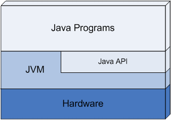
Първият прототип на виртуалната машина е реализиран от Sun Microsystems за преносимо устройство, аналогично на съвременните персонални електронни помощници (PDA). Настоящата виртуална машина на Sun, компонент от продуктите JavaTM 2 SDK и JavaTM 2 Runtime Environment, емулира виртуална машина по далеч по-изтънчен начин на Win32 и Solaris платформи. Това не означава, че виртуалната машина по някакъв начин има зависимост от технологията за реализация, хардуер или операционна система. Виртуалната машина е реализирана програмно като интерпретатор на bytecode, но може да се реализира да компилира до инструкции на истинския процесор и дори да се изгради хардуерно базирана реализация – силициев микропроцесор, способен да изпълнява bytecode.
Виртуалната машина не знае за програмния езика Java, а само изпълнява инструкциите на bytecode, записани като class файлове. Всеки език за програмиране, който може да се компилира до bytecode, може да бъде изпълняван от виртуалната машина.
Java e обектно-ориентиран език за програмиране от високо ниво с общо предназначение. Синтаксисът му е подобен на C и C++, но не поддържа много от неговите възможности с цел опростяване на езика, улесняване на програмирането и повишаване на сигурността. Програмите на Java представляват един или няколко файла с разширение .java. Тези файлове се компилират от компилатора на Java – javac до изпълним код и се записват във файлове със същото име, но различно разширение .class. Клас файловете съдържат Java bytecode инструкции, изпълним от виртуалната машина.
Езикът Java използва следните ключови думи:
|
abstract |
continue |
for |
new |
switch |
|
assert |
default |
goto |
package |
synchronized |
|
boolean |
do |
if |
private |
this |
|
break |
double |
implements |
protected |
throw |
|
byte |
else |
import |
public |
throws |
|
case |
enum |
instanceof |
return |
transient |
|
catch |
extends |
int |
short |
try |
|
char |
final |
interface |
static |
void |
|
class |
finally |
long |
strictfp |
volatile |
|
const |
float |
native |
super |
while |
От тях две не се използват. Това са const и goto. Те са резервирани, в случай че се реши да влязат в употреба. Не всички ключови думи се използват още от създаването на първата версия на езика. Някои от тях са добавени в по-късните версии. Версия 1.2 добавя ключовата дума strictfp, версия 1.4 добавя ключовата дума assert, и версия 1.5 добавя ключовата дума enum.
Основни конструкции в Java са класовете, методите, операторите, изразите, условните конструкции, цикли, типовете данни и изключенията.
Всичко това, както и повечето ключови думи, предстои да бъде разгледано подробно в следващите глави.
Едно от най-големите предимства на Java е предлаганото от нея автоматично управление на паметта. То предпазва програмистите от сложната задача сами да заделят памет за обектите и да следят подходящия момент за нейното освобождаване. Това рязко засилва производителността на програмистите и увеличава качеството на програмите, писани на Java.
За управлението на паметта се грижи специален компонент от виртуалната машина, наречен галено "събирач на боклука" или "система за почистване на паметта" (Garbage Collector). Основните задачи на събирача на боклука са да следи кога заделената памет за променливи и обекти вече не се използва, да освобождава тази памет и да я прави достъпна за последващи заделяния.
Java платформата, освен езика Java, съдържа в себе си Java виртуалната машина и множество помощни инструменти и библиотеки. Съществуват няколко разновидности на Java платформата съобразно целевата потребителска група, като възможностите, които те предлагат на разработчиците се застъпват:
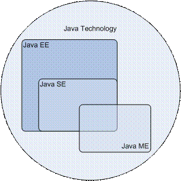
Стандартната версия на Java платформата е предназначена за разработката и използването на настолни приложения. Тази версия включва в себе си:
- Java компилатор – стандартна версия;
- Java Virtual Machine – стандартна версия;
- Графичен потребителски интерфейс;
- TCP/IP мрежов интерфейс;
- Работа с XML;
- Работа с файловата система;
- Интерфейс към платформен (native) код (JNI);
- Интерфейс за работа с бази данни (JDBC);
- Отдалечено извикване на методи (RMI-IIOP);
- 2D/3D графични библиотеки;
- Библиотеки за сигурност;
- Инструменти с общо предназначение;
- Много други.
Повечето от тези теми надхвърлят обхвата на настоящата книга и няма да бъдат разглеждани в подробности.
Доскоро известна повече като J2EE, тази разновидност на платформата е предназначена за големи приложения с корпоративен характер, най-често разработени да бъдат използвани от хиляди клиенти. Java EE съдържа всичко от Java SE, но го обогатява с още библиотеки и технологии.
Обсегът на Java EE далеч надхвърля обхвата на настоящата книга, затова само ще изброим най-основните технологии, включени в нея.
- HTTP сървър + Servlet контейнер – за разработка на уеб приложения;
- EJB контейнер – за разработка на преизползваеми компоненти за отдалечено извикване;
- Предаване на съобщения (JMS);
- Повишена сигурност;
- Уеб услуги.
Доскоро известна повече като J2ME, това е ограничена версия на стандартната с по-малко възможности, предназначена за използване в малки и ограничени откъм ресурси хардуерни устройства. Най-често това са мобилни телефони, персонални помощници (PDA) и дори домакински уреди като печки хладилници и телевизори.
За да постигне задоволителна производителност при тези скромни възможности на устройствата, Java ME опростява и ограничава възможностите на Java SE понякога до съвсем малък набор от базови операции. Това се отразява както на компилатора, така и на JMV.
Въпреки своята големина и изчерпателност Java платформата не покрива всички възможни теми. Съществуват множество независими производители на софтуер, които разширяват и допълват това, което се предлага от Java. Разширенията са програми, достъпни за преизползване от други Java програми. Преизползването на програмен код съществено улеснява и опростява програмирането. Ние като програмисти използваме наготово написани неща и така само с няколко класа можем да напишем сравнително сложна програма.
Да вземем за пример писането на програма, която визуализира данни под формата на графики и диаграми. Можем да вземем библиотека на писа на Java, която рисува самите графики. Всичко, от което се нуждаем, е да подадем правилните входни данни и библиотеката ще изрисува графиките вместо нас. Много е удобно.
Повечето разширения се използват като инструменти, защото са сравнително прости. Съществуват и разширения, които имат сложна структура и вътрешни зависимости и наподобяват не прости инструменти, а сложни техники, и е по-коректно да се нарекат технологии. Съществуват множество Java технологии с различни области на приложение. Типичен пример са уеб технологиите, позволяващи бързо и лесно да се пишат динамични уеб приложения.
Съществуват технологии, които поради качествата си, започват да се използват масово от програмистите. След като се утвърдят такива технологии, те се включват и стават част от самата Java платформата.
Всеки Java инструмент или технология се използва, като се създават обекти и се викат техни методи. Наборът от публични класове и методи, които са достъпни за употреба от програмистите и се предоставят от технологиите, се нарича Application Programming Interface или просто API. За пример можем да дадем самия Java API, който е набор от Java класове, разширяващи възможностите на езика, добавяйки функционалност от високо ниво. Всички Java технологии предоставят публичен API. Много често за самите технологии се говори просто като за API, предоставящ определена функционалност, като например API за работа с файлове, уеб API и т.н. Голяма част от съвременния софтуер използва множество видове API, обособени като отделно ниво от приложението.
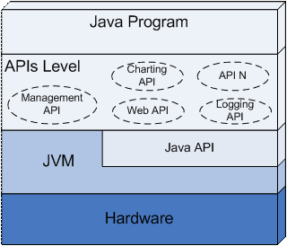
Много често се налага да се документира един API, защото той съдържа множество пакети и класове. Класовете съдържат методи и параметри, смисълът на които не е очевиден и трябва да бъде обяснен. Съществуват вътрешни зависимости между отделните класове и пакети и за правилната им употреба е необходимо разяснение.
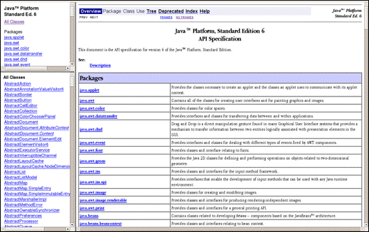
Java API документацията е стандартен HTML формат, позволяващ да се опишат пакетите, класовете, методите и свойствата, съдържащи се в дадена библиотека или инструмент. Тя се пише от програмистите, разработили библиотеката за програмистите, които я използват.
Типичен пример е Java™ Platform, Standard Edition 6 API Specification (http://java.sun.com/javase/6/docs/api/). Тук можем да намерим подробно описание на всичко от стандартната версия на Java платформата, включително препратки към статии, свързани с темата.
Базовите изисквания, за да можете да програмирате на Java са: първо - инсталирана Java платформа и второ - текстов редактор. Текстовият редактор служи за създаване и редактиране на Java кода, а за компилиране и изпълнение се нуждаем от самата Java.
Java SE, Java EE и Java ME са налични за инсталация за повечето съвременни операционни системи в това число Windows, Linux, Mac OS X, Solaris, AIX и др.
За да инсталирате Java SE на настолния си компютър, трябва да изберете подходящата дистрибуция. Съществуват две основни дистрибуции:
- Java Development Kit (JDK);
- Java Runtime Environment (JRE).
Като програмисти на Java ние се нуждаем от JDK. JDK включва в себе си както виртуална машина, така и Java компилатор, а също и множество помощни инструменти. JRE включва в себе си единствено виртуална машина и някои от нейните инструменти се явяват орязана версия на JDK. JRE се използва от хора, които нямат намерение да пишат програми на Java, а искат само да могат да изпълняват вече готови такива. Понякога JDK може да се срещне и като Java Standard Development Kit или Java SDK.
Служи за писане на изходния код на програмата и за записването му във файл. След това кодът се компилира и изпълнява.
Дойде време да приложим на практика вече разгледания теоретично пример на проста програма, написана на Java. Нека изпълним нашия пример. За целта трябва да направим следното:
- Да създадем файл с име HelloJava.java;
- Да запишем примерната програма във файла;
- Да компилираме HelloJava.java до файл HelloJava.class;
- Да подадем HelloJava.class на JVM за изпълнение.
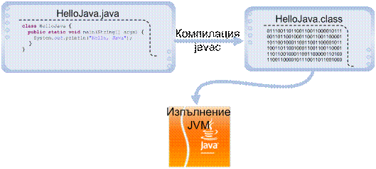
А сега, нека да го направим на компютъра!
|
|
Не забравяйте преди започването с примера, да инсталирате JDK на компютъра си! В противен случай няма да можете да компилирате и да изпълните програмата. |
Горните стъпки варират на различните операционни системи и затова ще ги разделим на две. Първо ще реализираме стъпките на Windows, а след това на Solaris и Linux. Стъпките за Solaris и Linux са еднакви, затова ги обединяваме. Всички операции ще бъдат извършени от командния ред (конзолата). Първите две стъпки - създаване на файл и записване на програмата в него – могат да бъдат пропуснати, ако използваме примерния файл:
|
HelloJava.java |
|
class HelloJava { public static void main(String[] arguments) { System.out.println("Hello, Java"); } } |
Нека създадем директория, в която ще експериментираме.
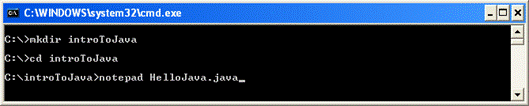
Директорията се казва introToJava и се намира в C:\. Променяме текущата директория на C:\introToJava и създаваме нов файл HelloJava.java, като за целта използваме вградения текстов редактор Notepad.
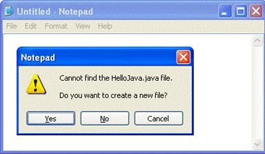
На въпроса дали искаме да бъде създаден нов файл, защото такъв в момента липсва, отговаряме с "Yes". Следващото необходимо нещо е да препишем програмата или просто да прехвърлим текста чрез копиране.
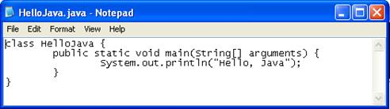
Записваме чрез [Ctrl-S] и затваряме с [Alt-F4]. Вече имаме изходния код на програмата, записан като файл C:\introToJava\HelloJava.java. Остава да компилираме и изпълним. Компилацията се извършва с компилатора javac.exe.
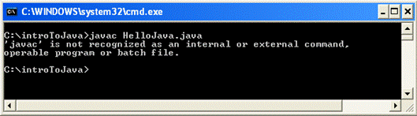
Ето, че получихме грешка – Windows не може да намери изпълним файл javac. Това е често срещан проблем, ако сега започваме да работим с Java, и причините за него са:
- Липсваща инсталирана Java дистрибуция;
- Инсталирана неправилна Java дистрибуция – JRE (трябва ни инсталиран JDK);
- Инсталиран JDK, но JAVA_HOME/bin директорията не е в пътя за търсене на изпълними файлове и Windows не намира javac.exe, въпреки че то е налично на диска.
Първите два варианта се решават, като се инсталира JDK. Последният се решава посредством използване на пълния път до javac.exe, както е показано на картинката долу.
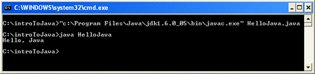
След изпълнението си javac излиза без грешки, като произвежда още един файл C:\introToJava\HelloJava.class. За да го изпълним, просто го подаваме на виртуалната машина. За стартиране на виртуалната машина използваме изпълнимия файл java.exe. Както се вижда на горния екран, използваме командата:
|
java HelloJava |
Резултатът от изпълнението на нашата първа програма е съобщението "Hello, Java", изписано на конзолата. Не е нещо велико, но е едно добро начало.
|
|
Не добавяйте разширението class, когато го подавате за изпълнение от java! В противен случай ще получите съобщение за грешка. |
Може би ви е досадно всеки път да изписвате пълния път до javac.exe или java.exe, когато компилирате през конзолата. За да избегнете това, можете да редактирате системните пътища в Windows и след това да затворите конзолата и да я пуснете отново. Промяната на системните пътища в Windows става по следния начин: My Computer --> Properties --> Advanced --> Environment Variables --> System Variables --> Path --> Edit:
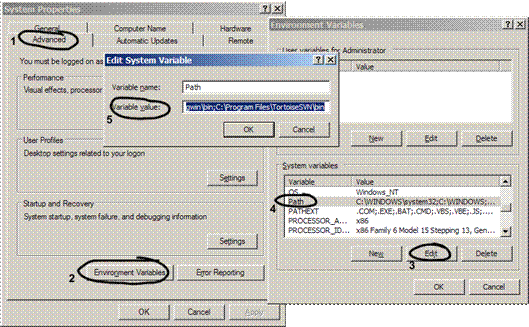
След това добавяме в пътя bin директорията на нашата инсталация на JDK. При стандартна инсталация този път би могъл да изглежда примерно така:
|
C:\Program Files\Java\jdk1.6.0_07\bin |
Пътят в променливата Path представлява списък, в който отделните елементи са разделени с точка и запетая. Добавянето на пътя до нашата JDK инсталация става като добавим точка и запетая и самия път. Внимавайте да не изтриете съществуващия списък, защото това ще навреди на компютъра ви и някои програми ще спрат да работят.
Вече сме готови. Трябва да затворим конзолата, защото тя ползва стария път (преди да го променим). След като пуснем нова конзола за команди (cmd.exe), ще можем да компилираме конзолно без да изписваме пълния път до компилатора на Java. Ето пример, в който извикваме Java компилатора от конзолата и искаме от него да изпише версията си:
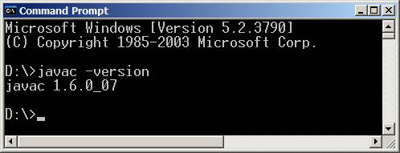
Да направим преразказ в картинки на горното, този път за Linux и Solaris операционни системи. Стъпките са аналогични.
|
|
Не забравяйте да инсталирате JDK, преди да се захванете с настоящия пример. В противен случай ще получите съобщения за грешки. |
При различните Linux и UNIX дистрибуции инсталирането на JDK става по различен начин и няма общо решение, което работи навсякъде. Четете в документацията на вашата дистрибуция с коя пакетна система работи тя, за да разберете съответната команда за инсталиране (rpm -i, yum install, apt-get install, …) и кой е съответният пакет. Например на Debian и Ubuntu Linux инсталирането на JDK става с командата:
|
apt-get install sun-java6-jdk |
Сега считаме, че имаме инсталиран JDK. Нека създадем директория, в която ще експериментираме. Директорията се казва introToJava и се намира в домашната директория на потребителя. Променяме текущата директория на ~/introToJava и създаваме нов файл HelloJava.java, като за целта използваме вградения текстов редактор vi.
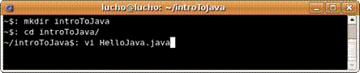
Влизаме в решим на въвеждане, като натискаме "i":
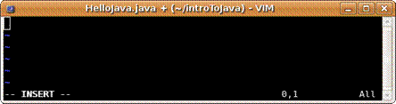
Въвеждаме или прехвърляме нашата програма с копиране. Записваме, като натискаме Esc, за да излезем от режим на въвеждане, след което пишем ":wq" и натискаме Enter:
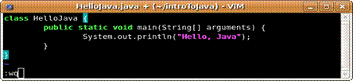
Всъщност, можем да използваме и друг текстов редактор вместо vi, защото, ако за първи път виждате vi, много трудно ще свикнете да работите с него. Вместо vi можете да използвате по-дружелюбните редактори mcedit или pico (които за преди това вероятно ще трябва да инсталирате, защото се разпространяват като допълнителни пакети).
Вече имаме файла ~/introToJava/HelloJava.java и остава да го компилираме и изпълним. Компилацията се извършва с компилатора javac:
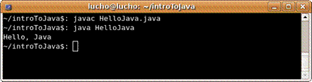
След изпълнението си javac излиза без грешки, като произвежда още един файл ~/introToJava/HelloJava.class. За да го изпълним, просто го подаваме на виртуалната машина. За стартиране на виртуалната машина използваме изпълнимия файл java (който би трябвало да е достъпен от системния път). Както се вижда на горния екран, използваме командата:
|
java HelloJava |
Резултатът от изпълнението на нашата първа програма е съобщението "Hello, Java", изписано на конзолата.
До момента разгледахме как се компилират и изпълняват Java програми с конзолата. Разбира се, има и по-лесен начин – чрез използване на среда за разработка, която изпълнява всички команди, които видяхме вместо вас. Нека разгледаме как се работи със среди за разработка и какво ни помагат те, за да си вършим по-лесно работата.
В горните примери разгледахме компилация и изпълнение на програма от един единствен файл. Обикновено програмите са съставени от много файлове, понякога дори десетки хиляди. Писането с текстов редактор, компилирането и изпълнението на една програма от командния ред е сравнително проста работа, но да направим това за голям проект, може да се окаже сложно и трудоемко занимание. За намаляване на сложността, улесняване на писането, компилирането, изпълнението и интегрирането им в един единствен инструмент, съществуват визуални приложения, наречени интегрирани среди за разработка (Integrated Development Environment, IDE). Средите за разработка най-често предлагат множество допълнения към основните функции, като дебъгване, пускане на unit тестове, проверка на често срещани грешки, контрол на версиите и т.н.
Eclipse (www.eclipse.org) е мощна интегрирана среда за разработка на софтуерни приложения. Eclipse е проект с отворен код и предлага инструменти за всички етапи от софтуерния жизнен цикъл. Тук ще разгледаме най-важните функции – тези, свързани със самото програмиране – писането, компилирането, изпълнението и дебъгването на програми.
Преди да преминем към примера, нека разгледаме малко по-подробно структурата на визуалния интерфейс на Eclipse. Основна съставна част са перспективите. Всяка перспектива съдържа един или повече визуализатори (views). Всеки визуализатор реализира различна функция, свързана с улесняване на програмирането. Да разгледаме най-използваната перспектива – Java перспективата. Тя съдържа:
- Package Explorer – тук могат да се видят всички класове, които съставят текущия проект на програма;
- Problems – показва грешките при компилация;
- Outline – показва свойствата и поведението (методите) на селектиран Java клас;
- Console – показва стандартния изход, когато стартираме програма.
Освен визуализатори в средата на работното пространство стоят редакторите на Java файлове. На примера по-долу няма нито един отворен файл за редактиране и затова пространството в средата е празно. В Eclipse можем да редактираме едновременно произволен брой файлове.
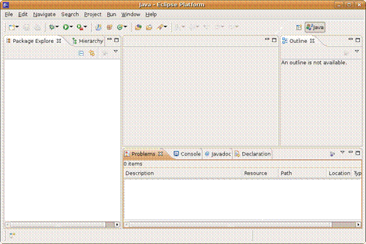
Съществуват още редица визуализатори с помощно предназначение, които няма да разглеждаме тук.
Преди да направим каквото и да било в Eclipse, трябва да създадем проект за него. Проектът логически групира множество файлове, предназначени да реализират произволна програма. За всяка програма е добре да се създава отделен проект.
Проект се създава чрез следване на следните стъпки:
- File -> New -> Project;
- Избираме "Java Project";
- Въвеждаме името на проекта ни - примерно "introToJava";
- Натискаме "Finish".
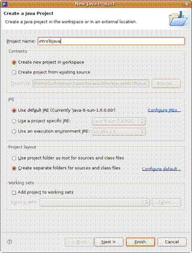
Новосъздаденият проект се показва в Package Explorer.
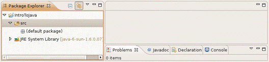
Вече можем да добавяме класове към проекта.
Eclipse предлага помощен прозорец за създаването на нови класове:
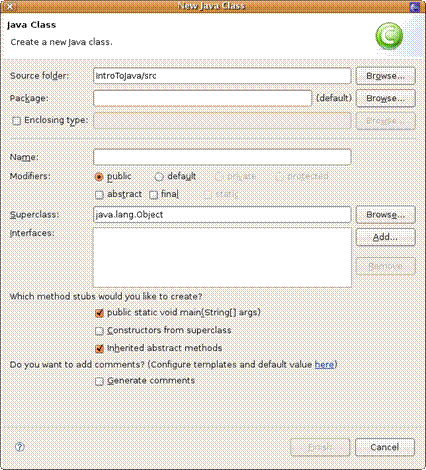
За да създадем нов клас:
- Избираме File-> New -> Class;
- В помощния прозорец попълваме името на класа - примерно "HelloJava";
- Селектираме опцията "public static void main(String[] args)" – това автоматично ще генерира main() метод за нас;
- Натискаме бутона [Finish].
Новосъздаденият клас се появява в Package Explorer и се отваря нов редактор, където може да въведем съдържанието на новия клас. Eclipse е генерирал тялото на новия клас, метод main() и няколко помощни коментара:
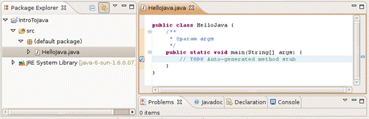
Въвеждаме съдържанието на main() метода и сме готови за компилация и изпълнение:
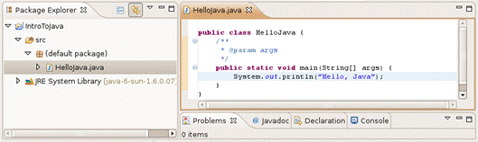
Процесът на компилация в Eclipse включва няколко стъпки:
- Проверка за синтактични грешки;
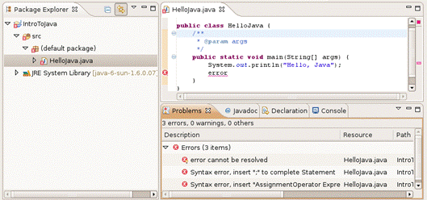
- Проверка за грешки на типовете;
- Преобразуване на Java кода в изпълними bytecode инструкции.
За да компилираме класа си в Eclipse, всъщност не е нужно да правим нищо допълнително. Компилацията се извършва още докато пишем. Намерените грешки се подчертават в червено за заостряне на вниманието. Когато запишем промените, компилацията отново се стартира автоматично. Намерените грешки се показват във визуализатора "Problems".
Ако в проекта ни има поне една грешка, то тя се отбелязва с малък червен "х" в Package Explorer. Ако разгърнем проекта на ниво пакети и класове, тези, които съдържат грешки, се отбелязват по същия начин. Ако щракнем двойно на някоя от грешките в Problems Eclipse, ни прехвърля автоматично на мястото в кода, където е възникнала грешката.
За да стартираме проекта, избираме Run -> Run As -> Java Application или клавишната комбинация Ctrl+Alt+X J (Натискаме Ctrl, Alt и X заедно, след което натискаме J).
Програмата се стартира и резултатът се изписва във визуализатора "Console":
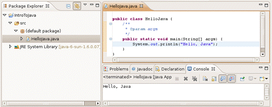
Не всички типове проекти могат да се изпълнят. За да се изпълни Java проект, е необходимо той да съдържа поне един клас с main() метод.
Когато програмата ни съдържа грешки, известни още като бъгове, трябва да намерим и отстраним тези грешки. Трябва да дебъгнем програмата. Процесът на дебъгване включва:
- Забелязване на бъговете;
- Намиране на кода, който причинява проблемите;
- Оправяне на кода, така че програмата да работи правилно;
- Тестване, за да се убедим, че програмата работи правилно след корекциите.
Процесът може да се повтори няколко пъти и е продължителен.
Eclipse предлага отделна перспектива за дебъгване:
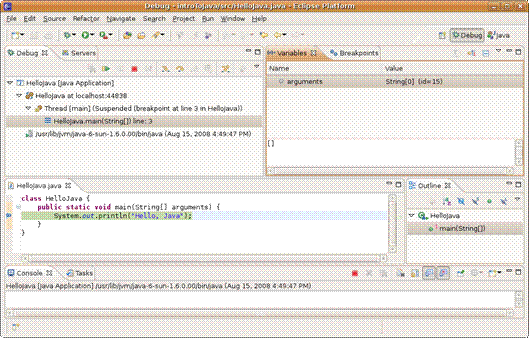
След като сме забелязали проблема в програмата си, ние трябва да намерим кода, който го създава. Eclipse може да ни помогне с това, като ни позволи да проверим дали всичко работи, както е планирано.
За да спрем изпълнението на програмата, в тези места поставяме точки на прекъсване, известни още като стопери (breakpoints). Стоперът е асоцииран към ред от програмата ни. Програмата спира изпълнението си на тези редове и позволява постъпково изпълнение на останалите редове. На всяка стъпка може да проверяваме и дори променяме съдържанието на текущите променливи.
Дебъгването е един вид изпълнение на програмата на забавен кадър. То ни дава възможност по-лесно да вникнем в детайлите и да видим къде са грешките.
1. Да се намери описанието на класа System в стандартната Java API документация.
2. Да се намери описанието на метода System.out.println(), с различните негови параметри, в стандартната Java API документация.
3. Да се компилира и изпълни примерната програма от тази глава през командния ред (конзолата) и с помощта на Eclipse.
4. Да се модифицира примерната програма, така че да изписва различно поздравление, например "Добър ден!".
1. Използвайте http://java.sun.com/javase/6/docs/api/ и потърсете класа System.
2. В описанието на класа System потърсете полето out, след което намерете метода println().
3. Използвайте инструкциите, дадени в текста на тази глава.
4. Използвайте инструкциите, дадени в текста на тази глава.